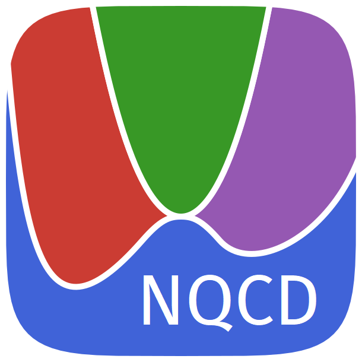

Contributing to NQCD

This page describes the process of contributing to NQCD for members of the maurergroup. In particular, it focuses on the case where your contributions should be kept private until ready for publication. For general guidelines for contributing to open source Julia packages, refer to the Contributor's Guide from the SciML organisation.
NQCD overview
The components of NQCD are distributed over multiple repositories hosted within the NQCD organisation on GitHub. Most of these repositories are public, which means anyone can see all of the branches pushed to the remote repository. Often we want to keep our developments private whilst we work on them which means we cannot use the public repositories to store our development work.
Handling private development
There are two options that allow us to develop in private. If you are not sure which is more appropriate for your feature, feel free to ask.
1. Private add-on packages
The modular nature of Julia and the NQCD project allows us to split up the code into multiple packages without any downsides. In fact, it is often advantageous as it allows you to add as many dependencies as you like and you are able to host your own test sets. This set up is desirable when developing a new model built on top of NQCModels.jl or an interface that requires extra dependencies or is relatively complex. To do this, simply create a new GitHub repository and generate a new Julia package. For this, I recommend using PkgTemplates.jl. Examples of the add-on setup include: TullyNOAu111.jl and NNInterfaces.jl, along with many of the packages you can find here. Technically, you are free to host these packages wherever you like, either within NQCD, maurergroup or even on your own profile. Though the best place is probably NQCD so we can manage it more easily. The key is that you make sure the visibility of the repository is set to private.
2. Private "forks" of public repositories
If you development is more suitable within one of the existing public packages, then we must employ an alternate strategy. We cannot publish our changes to the public repository, so we must create a private copy of the repository. Usually when you want to create a copy of a repository, you would fork the repository which has the advantage of closely linking the repositories automatically, making it easy to synchronise and publish changes. However, GitHub does not allow for private forks of public repositories which means we must find another way. Fortunately, GitHub provides instructions for how to duplicate a repository. We can use this to create a private copy of the public repository and manually handle the synchronisation between them.
Development procedure
The development of a private feature for a public repository is as follows:
- Create a private copy of the main repository if it does not already exist. (Duplicating a repository)
- Create a new branch off of
mainnamed{feature-name}-staging. This will act as the effectivemainbranch for your new development and will never be merged into the actualmain. - To work on your feature, you should create another branch off of
{feature-name}-stagingand open up a draft pull request. - Commit as many changes as you like to your branch. These changes will appear in the pull request and the automated tests will run.
- Merge your development branch into
{feature-name}-stagingwhen you are ready. - Repeat steps 3, 4 and 5 until your feature is complete.
- When ready for public release, push your
{feature-name}-stagingbranch to the public repository and open a pull request. This can be merged straight away since it should be in perfect condition by this stage.
Extra considerations
The main branch of the private repository should exactly copy and be kept in sync with the main branch of the public repository. This can be done using GitHub actions or manually.
The private main branch acts only as a copy of the public repository so it is simpler to keep private developments up to date with the public repository.
Periodically, you should merge/rebase main into your {feature-name}-staging branch to ensure your developments do not fall out of sync with other changes.
It is recommended that the steps 3-6 are comprised of many small branches with detailed discussion in each pull request. This way we can keep things moving and are less likely to end up out of sync with other developments.
This process assumes that each feature is independent and the features do not interact with one another.
For most cases this will be true so it should be possible to have many features with their own {feature-name}-staging branches all in development at the same time.